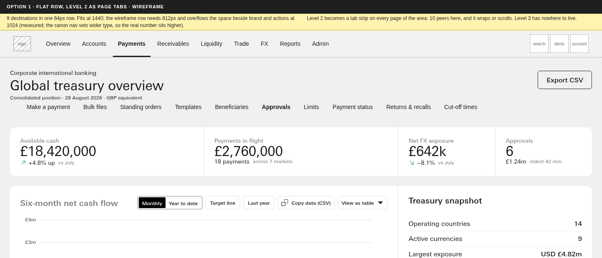
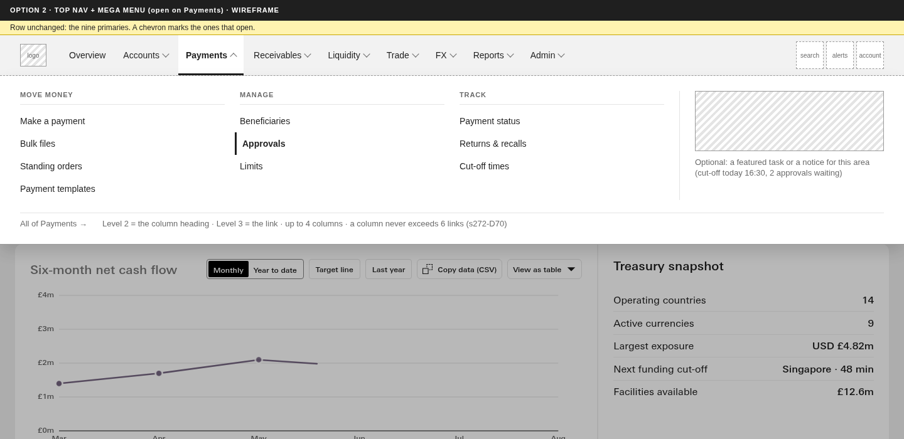
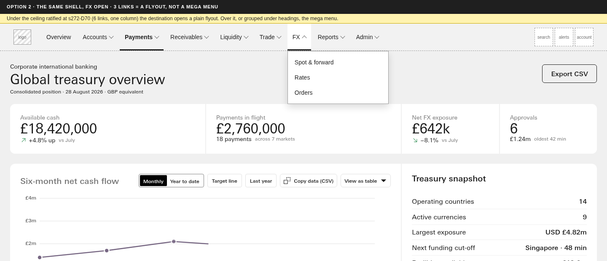
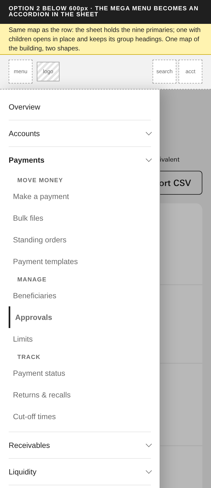
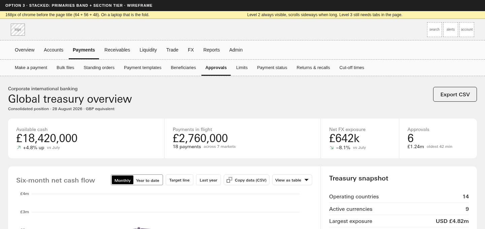
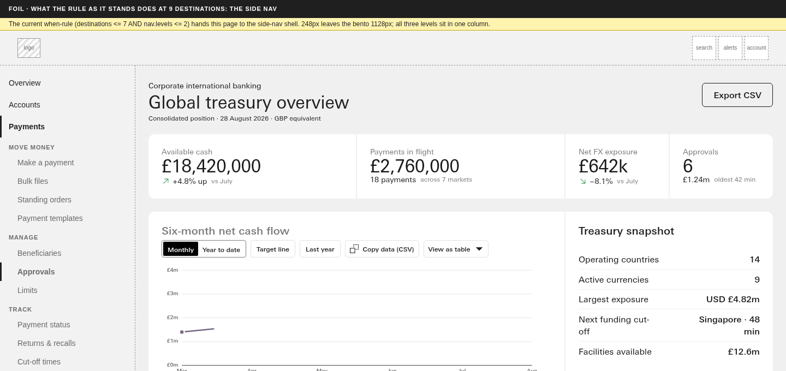
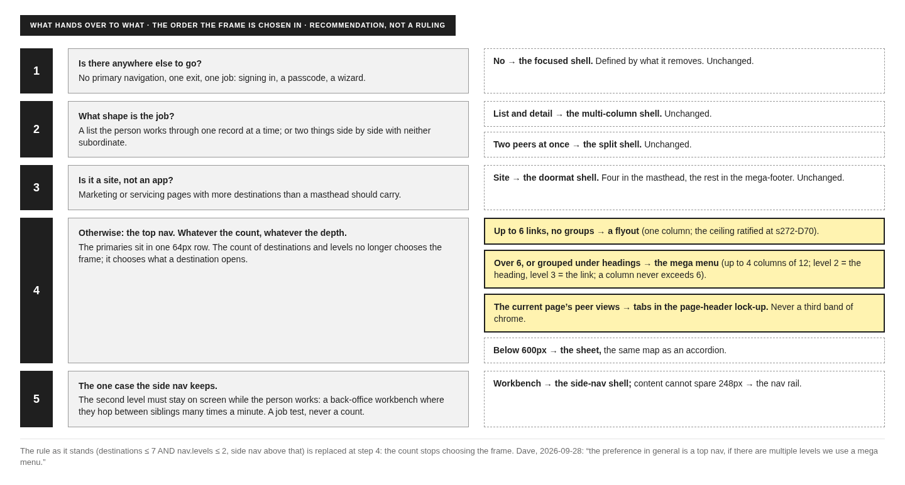

Lane F1 · #311 overnight wave 1 · Wed 30 Sep → Thu 1 Oct 2026 · rendered from d1901fa2 · wireframes, not builds · nothing here is a ruling
You said, on 28 September: "Not quite, this is an IA question and the preference in general is a top nav, if there are multiple levels we use a mega menu. Again we need to explore this rule more rigorously." This page is that exploration. Four ways of holding a nine-destination, three-level banking portal are drawn on the banking demo, then a recommendation and the rule it implies. Closes W-305e2 when you answer.
The banking demo carries four destinations today (Overview, Payments, Liquidity, Trade). A real corporate international banking portal carries about nine, each with a second level and most with a third: Accounts, Payments, Receivables, Liquidity, Trade, FX, Reports, Admin, plus Overview. Payments alone has ten leaf pages under three groups. That is the case every option below is drawn against, because it is the case the rule as it stands cannot hold: destinations <= 7 AND nav.levels <= 2 hands this portal to the side nav.





stacked form with sectionTier on. Level 2 is always visible and scrolls sideways when long. The price is 168px of chrome before the page title (64 + 56 + 48, measured 170 on the wireframe with its rules), and level 3 still needs tabs in the page. On a laptop that is the fold.

Recommendation
Option 2. The top nav is the default frame for any app, whatever the count of destinations or levels. A destination with up to six ungrouped links opens a flyout; over six, or grouped, it opens the mega menu, with level 2 as the heading and level 3 as the link. The current page's peer views are tabs in the page-header lock-up, never a third band of chrome. Below 600px the same map folds into the sheet. The side nav survives for one case only, the workbench, where the person needs the second level on screen while they work; that is a job test, and the nav rail is its narrow form.
Why not 1: it holds the row but breaks below, and it has no answer for a third level. Why not 3: the section tier spends the fold on every page to solve a problem the mega menu solves on demand; it is worth keeping as the top-nav meta's stacked form for a product whose primaries do not fit the row, and for nothing else.
Written in the meta's own grammar (gate, then prose after the em-dash; field names from knowledge/when-fields.json). The gate half no longer carries a count.
primaryNavigation = present AND platform = app — the default frame for an application, whatever the count of destinations or levels: the primaries sit in one 64px row (the inline form; the stacked form only when they do not fit the row at the product's floor width); a destination with children opens a flyout (up to 6 links, one column) or, over 6 or grouped under headings, the mega menu (up to 4 columns, level 2 the heading, level 3 the link, a column never over 6; s272-D70); the current page's peer views are tabs in the page-header lock-up, never a third band. Yields to app-shell-focused (primaryNavigation = absent), to app-shell-multi-column (list-and-detail job), to app-shell-split (two peers on screen) and to app-shell-doormat (platform = marketing). app-shell-side-nav takes over only when the second level must stay on screen while the person works (a workbench), and app-shell-nav-rail when that column cannot be spared: a job test, never a count.
Three consequences for the tree if you take it, none built tonight: the side-nav shell's roles.json when ("> 7 destinations or two nav levels") changes to the workbench test; the main-navigation rule you accepted at 4c·13 ("In the side-nav shell, the sidebar nav takes over") still reads true; and the flyout/mega line needs a count of links under one destination, which when-fields.json has no name for yet (it is prose inside the gate until a name is added by the s273-D4 route).
Call 1 · the rule
Does the top nav become the default frame for an app, whatever the count, with the mega menu for multiple levels? Recommendation: yes, as the when-rule above. Options: Yes, as drawn · Change it (comment).
Call 2 · the flyout / mega line
Is six links in one column (s272-D70) the line between a flyout and the mega menu? Recommendation: yes; grouped under headings is also the mega menu regardless of count. Options: Yes · Change it (comment).
Call 3 · where the third level lives
Tabs in the page-header lock-up, or the section tier (option 3)? Recommendation: tabs; the tier only for the stacked form. This is also W-305e3's lock-up, worked by lane F2. Options: Tabs · Section tier · Change it (comment).
Call 4 · what the side nav keeps
Does the side-nav shell survive for the workbench case only, chosen by the job, never by a count? Recommendation: yes. Options: Yes · No, retire it · Change it (comment).
Rendered at the seat from git show d1901fa2 copies of the demo, canon.css and type.css written to /dev/shm, so the working tree's uncommitted canon was not read. The demo's own masthead is hidden and a wireframe masthead injected in its place; the page header and bento below are the real demo. Script: notes/_lanes/312/F/render_F1.py; facts: img/F1-facts.json. Pictures at 1440 (phone at 390, 2x). The wireframe type is Helvetica 14px with 12px item padding, narrower than the canon nav link, so the 812px row measurement reads low for the real thing. The mega menu geometry is a proposal: 24px panel padding, 32px side padding, four 3-column cells of the 12-column grid, 36px link rows, headings in 11px uppercase. Nothing in knowledge/ was edited.
| Picture | Chrome before the page title | Row items |
|---|---|---|
| Option 1 | 65px | 9 |
| Option 2 (a, b) | 65px (panel on demand) | 9 |
| Option 3 | 170px | 9 + 10 |
| Foil | 64px + 248px column | 0 in the row |
| Phone | 64px | sheet |